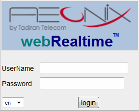

From the workstation, open your Internet browser.
Enter either of the following text strings in the Address bar:
http://<aeonixserver IP>:9070/webRT/login.jsp (replace <aeonixserver IP> with the IP address of the Aeonix server) Note: Can be used if Apache Tomcat is running on your Aeonix server.
http://<hostname>:9070/webRT/login.jsp
(replace <hostname> with the host name of the Aeonix server)
Click the Go button or press ENTER. The Aeonix Web Real-Time Login page is displayed.

Aeonix
Web Real-Time is configured to be displayed in your default language.
If necessary, select another language from the drop-down list.
Enter the user name and password.
Note: The built-in user name and password for accessing Aeonix Web Real-Time for supervisors are ea and e1996, respectively.
Click login. Aeonix Web Real-Time is displayed.